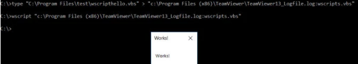

type "C:\Program Files\test\wscripthello.vbs" > "C:\Program Files (x86)\TeamViewer\TeamViewer13_Logfile.log:wscripts.vbs"
wscript "C:\Program Files (x86)\TeamViewer\TeamViewer13_Logfile.log:wscripts.vbs"
